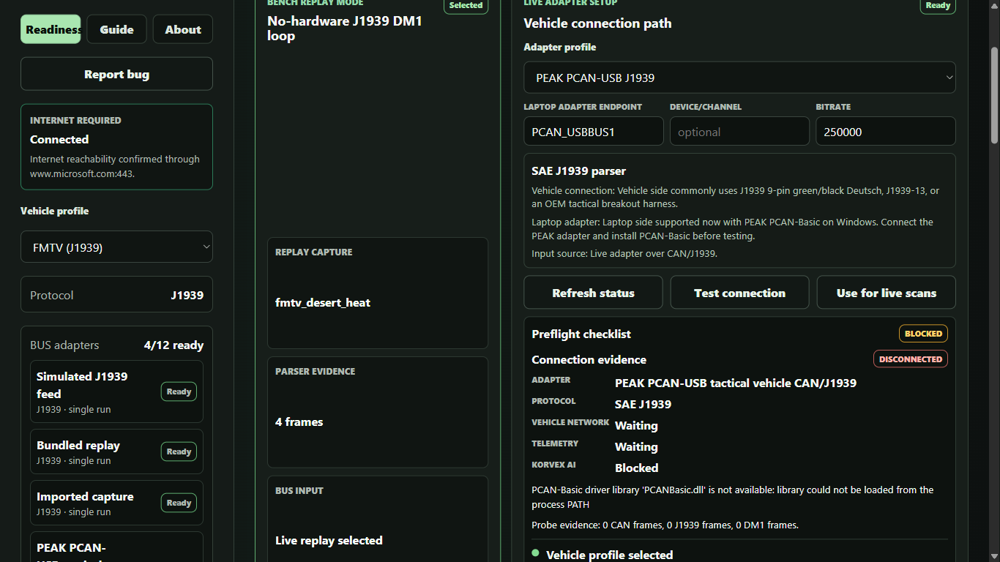

TraceWear
Offline-first vehicle maintenance readiness analysis for Windows.
Free professional prototype · Windows x64 · Published by Jacob BrownCurrent release
TraceWear 1.0.0
Simulation, replay, capture import, analysis, Help, and report export work offline. Signed updates and public support remain optional.
- Product
- TraceWear 1.0.0
- Engine
- Korvex 1.1.2
- Category
- Business / Data Analytics
- Availability
- United States
Professional prototype
Local diagnostics without a network dependency
Review bundled simulations, replay recorded BUS captures, import supported files, run the Korvex analysis engine, and export maintenance briefs without sending vehicle data to a server.
PCAN, Kvaser, and RP1210 integrations are clearly marked preview. Vendor drivers are not bundled, and bundled costs, parts, and predictions are reference data.

Support and policies
Bug reports are local by default. Before opening a public issue, remove sensitive vehicle, maintenance, personnel, organization, classified, controlled, or export-restricted information.